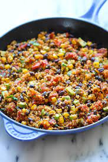

Mexican Quinoa

Description
Healthy quinoa recipe with mexican flavors and simple ingredients. This dish is very easy to make.
Extra toppings such as greek yogurt, cilantro, and avocado can be added to enhance the flavors.
Ingredients
- 1 cup quinoa
- 1 cup chicken broth
- cloves of garlic
- jalepenos
- 1 can black beans
- 1 can corn
- 1 can fire roasted tomatos salsa style
- 1 lime
- Cilantro
- 1 tsp Chili Powder
- 1 tsp Cumin
- salt and pepper to taste
Steps
- Chop jalepenos and garlic
- cook in pain on medium heat until fragrant
- add corn, beans, salsa, quinoa, broth and spices
- bring to low simmer
- Cover for 20 minutes
- Add lime and cilantro, stir
- Top with yogurt, avocado, or chicken